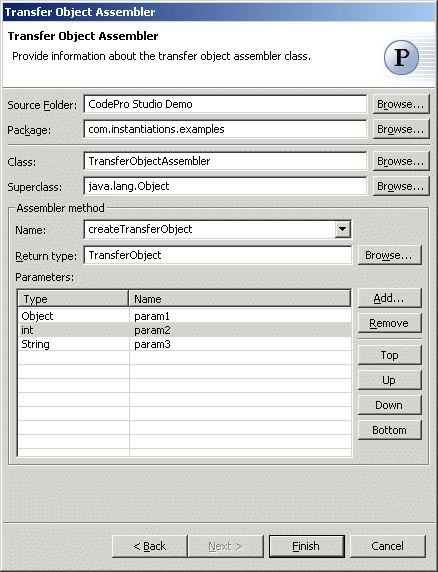

Transfer Object Assembler Pattern
The  Transfer Object
Assembler pattern assembles Transfer Objects for retrieving data from various business objects and other objects that define the model or part of the model.
Transfer Object
Assembler pattern assembles Transfer Objects for retrieving data from various business objects and other objects that define the model or part of the model.
Wizard
| Option | Description | Default |
| Source folder | Enter a source folder for the transfer object assembler class. Either type a valid source folder path or click Browse to select a source folder via a dialog. | The source folder of the element that was selected when the wizard was started. |
| Package | Enter a package to contain the transfer object assembler class. Either type a valid package name or click Browse to select a package via a dialog. | The package of the element that was selected when the wizard was started. |
| Class | Enter a name for the transfer object assembler class. Either type a valid class name or click Browse to select a class via a dialog. | <TransferObjectAssembler> |
| Superclass | Enter a name for the superclass of the transfer object assembler class. Either type a valid class name or click Browse to select a class via a dialog. | <java.lang.Object> |
| Assembler Method Name | Enter a name for the assembler method. Either type a valid method name or select one from the drop-down list. | <createTransferObject> |
| Assembler Method Parameters | Specify the parameters for the assembler method. | <blank> |
Applicability
Use the Transfer Object Assembler pattern when-
There is a tight coupling between the client and the distributed components of the model over the network
-
The client accesses the distributed components via the network layer, and this can lead to performance degradation if the model is complex with numerous distributed components.